Color can really bring your pages to life.
In this chapter we will look at:
What you will learn about colors in this chapter will then be used in subsequent chapters when it comes to looking at colors of text and boxes in CSS.
The color property allows you to specify the color of text inside an element. You can specify any color in CSS in one of three ways:
These express colors in terms of how much red, green and blue are used to make it up. For example: rgb(100,100,90)
These are six-digit codes that represent the amount of red, green and blue in a color, preceded by a pound or hash # sign. For example: #ee3e80
There are 147 predefined color names that are recognized by browsers. For example: DarkCyan
We look at these three different ways of specifying colors on the next double-page spread.
CSS3 has also introduced another way to specify colors called HSLA, which you will meet near the end of this chapter on page 255-256.
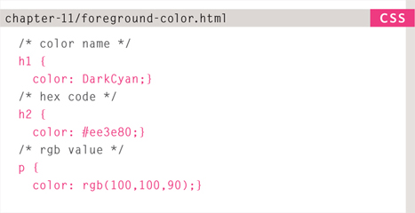
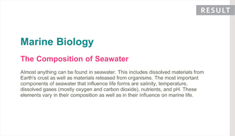
Above each CSS rule in this example you can see how CSS allows you to add comments to your CSS files. Anything between the /* symbols and the */ symbols will not be interpreted by the browser. They are shown in grey above.
The use of comments can help you to understand a CSS file (and organise it, by splitting a long document into sections). Here, we have used comments to indicate which method is used to specify each of the different types of colors.
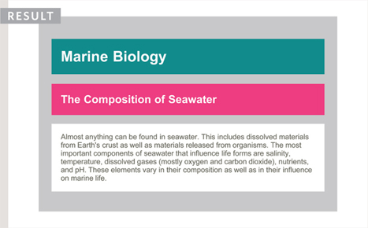
CSS treats each HTML element as if it appears in a box, and the background-color property sets the color of the background for that box.
You can specify your choice of background color in the same three ways you can specify foreground colors: RGB values, hex codes, and color names (covered on the next page).
If you do not specify a background color, then the background is transparent.
By default, most browser windows have a white background, but browser users can set a background color for their windows, so if you want to be sure that the background is white you can use the background-color property on the <body> element.
We have also used the padding property to separate the text from the edges of the boxes. This makes it easier to read and you will learn more about this property on page 313.
Every color on a computer screen is created by mixing amounts of red, green, and blue. To find the color you want, you can use a color picker.
Computer monitors are made up of thousands of tiny squares called pixels (if you look very closely at your monitor you should be able to see them).
When the screen is not turned on, it's black because it's not emitting any light. When it's on, each pixel can be a different color, creating a picture.
The color of every pixel on the screen is expressed in terms of a mix of red, green, and blue – just like on a television screen.
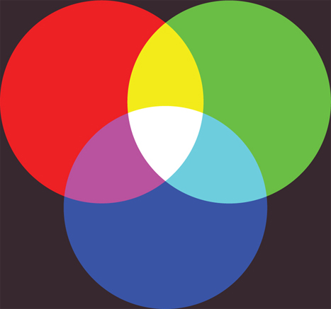
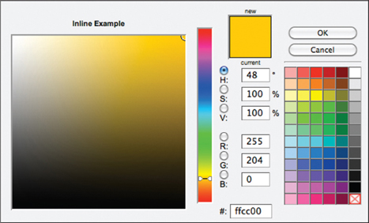
Color picking tools are available in image editing programs like Photoshop and GIMP. You can see the RGB values specified next to the radio buttons that say R, G, B.
The hex value is provided next to the pound or hash # symbol. There is also a good color picking tool at: colorschemedesigner.com
Values for red, green, and blue are expressed as numbers between 0 and 255.
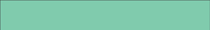
rgb(102,205,170)
This color is made up of the following values:
102 red
205 green
170 blue
Hex values represent values for red, green, and blue in hexadecimal code.
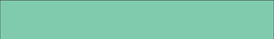
#66cdaa
The value of the red, 102, is expressed as 66 in hexadecimal code. The 205 of the green is expressed as cd and the 170 of the blue equates to aa.
Colors are represented by predefined names. However, they are very limited in number.
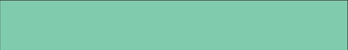
MediumAquaMarine
There are 147 color names supported by browsers (this color is MediumAquaMarine). Most consider this to be a limited color palette, and it is hard to remember the name for each of the colors so (apart from white and black) they are not commonly used.
Hue is near to the colloquial idea of color. Technically speaking however, a color can also have saturation and brightness as well as hue.
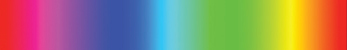
Saturation refers to the amount of gray in a color. At maximum saturation, there would be no gray in the color. At minimum saturation, the color would be mostly gray.
Brightness (or “value”) refers to how much black is in a color. At maximum brightness, there would be no black in the color. At minimum brightness, the color would be very dark.
When picking foreground and background colors, it is important to ensure that there is enough contrast for the text to be legible.
Text is harder to read when there is low contrast between background and foreground colors.
A lack of contrast is particularly a problem for those with visual impairments and color blindness.
It also affects those with poor monitors and sunlight on their screens (which is increasingly common as people use handheld devices outdoors).
Text is easier to read when there is higher contrast between background and foreground colors.
If you want people to read a lot of text on your page, however, then too much contrast can make it harder to read, too.
For long spans of text, reducing the contrast a little bit improves readability.
You can reduce contrast by using dark gray text on a white background or an off-white text on a dark background.
If text is reversed out (a light color on a dark background), you can increase the height between lines and the weight of the font to make it easier to read.
To check contrast there is a handy online tool at: www.snook.ca/technical/colour_contrast/colour.html
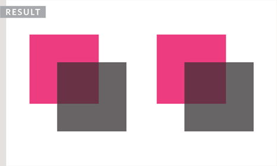
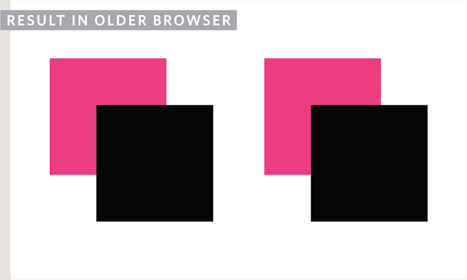
CSS3 introduces the opacity property which allows you to specify the opacity of an element and any of its child elements. The value is a number between 0.0 and 1.0 (so a value of 0.5 is 50% opacity and 0.15 is 15% opacity).
The CSS3 rgba property allows you to specify a color, just like you would with an RGB value, but adds a fourth value to indicate opacity. This value is known as an alpha value and is a number between 0.0 and 1.0 (so a value of 0.5 is 50% opacity and 0.15 is 15% opacity). The rgba value will only affect the element on which it is applied (not child elements).
Because some browsers will not recognize RGBA colors, you can offer a fallback so that they display a solid color. If there are two rules that apply to the same element, the latter of the two will take priority. To create the fallback, you can specify a color as a hex code, color name or RGB value, followed by the rule that specifies an RGBA value. If the browser understands RGBA colors it will use that rule. If it doesn't, it will use the RGB value.
At the time of writing, the opacity and rgba properties are only supported by the most recent browsers.
CSS3 introduces an entirely new and intuitive way to specify colors using hue, saturation, and lightness values.
Hue is the colloquial idea of color. In HSL colors, hue is often represented as a color circle where the angle represents the color, although it may also be shown as a slider with values from 0 to 360.
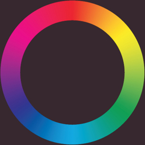
Saturation is the amount of gray in a color. Saturation is represented as a percentage. 100% is full saturation and 0% is a shade of gray.
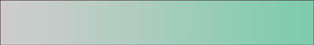
Lightness is the amount of white (lightness) or black (darkness) in a color. Lightness is represented as a percentage. 0% lightness is black, 100% lightness is white, and 50% lightness is normal. Lightness is sometimes referred to as luminosity.
Please note that lightness is a different concept to brightness. Graphic design software (such as Photoshop and GIMP) have color pickers that use hue, saturation, and brightness – but brightness only adds black, whereas lightness offers both white and black.
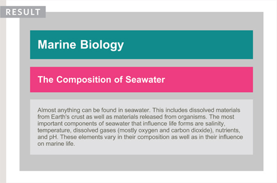
Because older browsers do not recognize HSL and HSLA values, it is a good idea to add an extra rule which specifies the color using a hex code, RGB value, or color name. This should appear before the rule that uses the HSL or HSLA value.
This provides a fallback because if there are two rules that apply to the same element in CSS, the latter of the two always takes priority. This means that if the browser understands HSL and HSLA colors, it will use that rule; and if it does not, it will use the first rule.
The hsl color property has been introduced in CSS3 as an alternative way to specify colors. The value of the property starts with the letters hsl, followed by individual values inside parentheses for:
This is expressed as an angle (between 0 and 360 degrees).
This is expressed as a percentage.
This is expressed as a percentage with 0% being white, 50% being normal, and 100% being black.
The hsla color property allows you to specify color properties using hue, saturation, and lightness as above, and adds a fourth value which represents transparency (just like the rgba property). The a stands for:
This is expressed as a number between 0 and 1.0. For example, 0.5 represents 50% transparency, and 0.75 represents 75% transparency.
This example shows a pH scale to demonstrate the different ways that colors can be specified using CSS (using color names, hex codes, RGB, and HSL).
The rule for the <body> element sets a default color for all the text as well as the default background color for the page. Both use color names.
The rule for the <h1> element sets the color of the heading using a hex code. There are two values for the background-color property of the <h1> element. The first provides a fallback color using a hex code and the second is an HSLA value for browsers that support this method.
Each paragraph is then shown in a different color to represent the varying levels of acidity or alkalinity, and these are specified using RGB values.
The example also uses a property called margin to decrease the gap between the paragraph boxes, and a property called padding to create a gap between the edge of the boxes and the text within them. (These properties are covered on pages 313-314.)
<!DOCTYPE html> <html> <head> <title>Color</title> <style type-“text/css”> body { background-color: silver; color: white; padding: 20px; font-family: Arial, Verdana, sans-serif;} h1 { background-color: #ffffff; background-color: hsla(0,100%,100%,0.5); color: #64645A; padding: inherit; p { padding: 5px; margin: 0px;} p.zero { background-color: rgb(238,62,128);} p.one { background-color: rgb(244,90,139);} p.two { background-color: rgb(243,106,152);} p.three { background-color: rgb(244,123,166);} p.four { background-color: rgb(245,140,178);} p.five { background-color: rgb(246,159,192);} p.six { background-color: rgb(245,176,204);} p.seven { background-color: rgb(0,187,136);} p.eight { background-color: rgb(140,202,242);} p.nine { background-color: rgb(114,193,240);}
p.ten { background-color: rgb(84,182,237);} p.eleven { background-color: rgb(48,170,233);} p.twelve { background-color: rgb(0,160,230);} p.thirteen { background-color: rgb(0,149,226);} p.fourteen { background-color: rgb(0,136,221);} </style> </head> <body> <h1>pH Scale</h1> <p class-“fourteen”>14.0 VERY ALKALINE</p> <p class-“thirteen”>13.0</p> <p class-“twelve”>12.0</p> <p class-“eleven”>11.0</p> <p class-“ten”>10.0</p> <p class-“nine”>9.0</p> <p class-“eight”>8.0</p> <p class-“seven”>7.0 NEUTRAL</p> <p class-“six”>6.0</p> <p class-“five”>5.0</p> <p class-“four”>4.0</p> <p class-“three”>3.0</p> <p class-“two”>2.0</p> <p class-“one”>1.0</p> <p class-“zero”>0.0 VERY ACID</p> </body> </html>